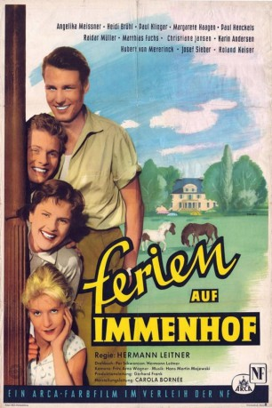

#7977 Ferien auf Immenhof
 
 IMDB-Wertung: 5.9 / 10
IMDB-Wertung: 5.9 / 10  Metascore: 0
Metascore: 0 
Immenhof wurde zu einem Hotel umgestaltet, das Urlaub mit Ponyreiten anbietet und sich deshalb "Ponyhotel" nennt. Die Mädchen Dick und Dalli reiten auf Ponys ins nahe gelegene Lübeck, um dort Werbung für das Ponyhotel zu machen. Da die Prospekte nicht zu erfüllende Erwartungen wecken, reisen die ersten Gäste enttäuscht wieder ab. Die Situation ändert sich, als es Jochen von Roth und Oma Jantzen gelingt, ein Reisebüro von den Vorzügen ihres Urlaubshotels zu überzeugen.
Jahr: 1957
Dauer: 89 Minuten
FSK: 6
Land: West-Deutschland Studio: Neue FilmverleihTonspuren:
Untertitel:
Auflösung: 1080p (1440x1080) Größe: 5601 MB
Genre: Drama, Familie
Regisseur: Hermann Leitner
Drehbuch: Igor Zaritzky
Soundtrack: Hans-Martin Majewski
Darsteller:
 Heidi Brühl als Dalli
Heidi Brühl als Dalli- Paul Klinger als Jochen von Roth
- Paul Henckels als Dr. Pudlich
 Matthias Fuchs als Ethelbert
Matthias Fuchs als Ethelbert- Maria Paudler als Frau Käthe
- Angelika Meissner als Dick
- Margarete Haagen als Oma Jantzen
- Raidar Müller-Elmau als Ralf
- Christiane Jansen als Gisela
- Karin Andersen als Margot
- Hubert von Meyerinck als Dr. Westkamp
- Josef Sieber als Hein Daddel
- Roland Kaiser als Fritzchen
- Helen Vita als Fräulein Madler
- Herbert Kiper als Herr Ottokar
- Herbert Weissbach als Postbote
- Alexa von Porembsky als Frau Rehmann
- Wolfgang Neuss als Gast
Datei: X:\6-Hexalogie(A-Z)\Immenhof\Ferien auf Immenhof (1957, FSK6, 1440x1080).mkv seit 09.01.2018
Festplatte: HD Collection-3(N-Z)-6(A-Z)
 Es gibt insgesamt 9 Filme in der Gruppe '6-Hexalogie(A-Z)\Immenhof'
Es gibt insgesamt 9 Filme in der Gruppe '6-Hexalogie(A-Z)\Immenhof'